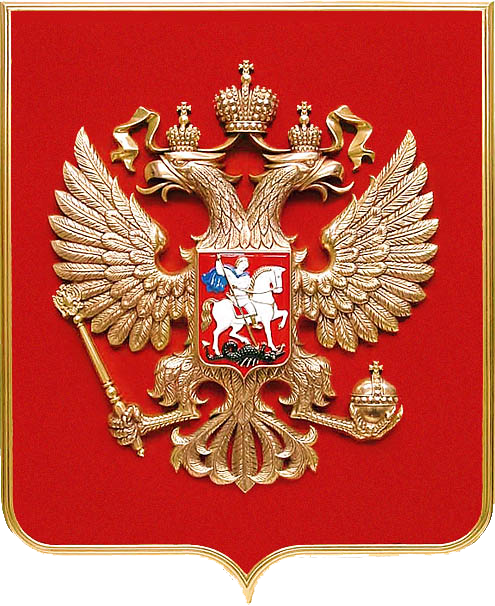

Символика Российского государства
Символика Российской Федерации – выражение самобытности и суверенитета государства. Официально закрепленные символические знаки служат способом индивидуализации страны в мировом сообществе. Символика Российской Федерации – выражение самобытности и суверенитета государства. Официально закрепленные символические знаки служат способом индивидуализации страны в мировом сообществе.
 Это наглядное отражение исторических, патриотических, культурных, этнических, духовных традиций, а также географического положения, интеллектуального и экономического потенциала, многонациональности традиций и культур.
Символику РФ составляет флаг, герб, гимн и знак Президента. Эти элементы без преувеличения представляют собой историческую и патриотическую ценность народа. Они закреплены на конституционном уровне и являются объектом правовой охраны.
Российский триколор известен во всем мире. С 2000 года, с момента утверждения ФЗ «О государственном флаге РФ» он является обязательным атрибутом всех официальных мероприятий, украшает административные здания, служит предметом гордости для спортсменов, политиков, ученых и каждого патриота. Белая, синяя и красная равновеликие полосы на прямоугольном полотнище не имеют официального толкования. История флага насчитывает свыше трехсот лет.
Гимн РФ на слова Сергея Михалкова и музыку Александра Александрова при официальном исполнении выслушивается только стоя и мужчины снимают головные уборы. Многолетняя история музыки дополнена обновленным текстом и утверждена в 2000 году с принятием одноименного закона. Звучание гимна украшает и сопровождает все важные мероприятия, в которых участвует Россия в лице своих представителей – политиков, делегатов, спортсменов. Слова и музыка по смысловому содержанию редко оставляют равнодушными и максимально отражают национальный дух.
Государственный герб представляет собой изображение золотого двуглавого орла с поднятыми вверх распущенными крыльями на четырехугольном геральдическом щите. Над двумя малыми коронами на головах птицы расположена крупная корона. В лапах орла скипетр и держава, на груди – изображение всадника на коне. Многокомпонентный, мощный по символичному наполнению герб является неотъемлемой частью официальных документов, изображается на флагах и может использоваться в одноцветной и разноцветной версии.
Каждый символ государственности несет в себе многозначительную смысловую нагрузку и интересен с точки зрения содержания, посыла, истории. Герб, флаг и гимн РФ ориентированы на перспективы.